四月十九日 (二)
Pamukkale
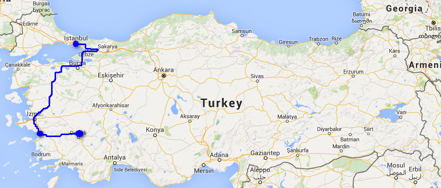
買咗朝早八點半嘅車票去 Pamukkale，八點至開始有早餐食，Amed 唔知醒我走咗入佢個 dorm 叫佢，趕頭趕命，結果八點半至走人，心諗巴士唔等人，不過去到竟然又冇問題。噚日託 guesthouse 職員買票嘅時候佢話買唔到普通巴士，要坐特別車，當時冇諗咁多有得搭就得。原來好搞笑，我哋係坐人家嘅 tour 小巴，即係由呢度去 Pamukkale 的 tour，順便載我哋去，不過照收巴士錢咁解。
我跑到去巴士公司時，車仲未到，我將噚日嘅 reservation receipt 畀公司職員，順便買埋聽晚去 Göreme 嘅車飛。個職員問我之後仲去邊，我答 Urfa，他話，唔好去，危險。
我諗起 K，基本上土耳其東南面的地方，Urfa、Harran、Mardin、Diyarbakır，我都唔可以去，他甚至好認真咁同我講 promise me you will not go to Diyarbakır，我只好唔想答咁應佢 OK… 個心淨係諗行程作廢了唔知點算，都係去到 Cappadocia 至算啦，或者嗰度的人比較近東南面，會有唔同睇法呢。
因為係坐人哋 tour 車去 Pamukkale，所以會有導遊講嘢，話今日天氣好好，好好彩呀，噚日至落雨，上兩星期 Cappadocia 仲落緊雪。
好快就到咗 Pamukkale，拎住張收據去 Metro 巴士公司換真車飛，價錢變咗 55 TL，即係之前巴士公司收咗 5 TL 手續費，時間由夜晚八點變咗九點，仲要唔係响 Pamukkale 直接出發，而是由 Denizli 開出。
去到 ANZ 老闆介紹嘅 Dört Mevsim Hotel，45 TL 一單人房，Ahmed 因為今晚就要飛返去 Istanbul，暫存行李。勁肚餓，就在呢度食午餐，叫咗 kofte (肉丸/肉餅) 即整好好味，好多配菜。酒店似乎只得我哋兩個同埋同場另外兩個遊客咁。當我哋等緊嘢食嘅時候，佢哋行過嚟問可唔可以一齊食。
佢哋一個係台灣人，T，一個係加拿大籍嘅中國人，B，兩個朋友响以色列讀書。我哋就咁就一齊玩。食完成一點鐘，Ahmed 要三時半返到嚟搭車去機場，即係話只得兩個半鐘去，個入口仲要好鬼遠，我估快步行都成半粒鐘，不過又唔知點解好好彩，酒店嘅人車我哋去到入口喎。
Pamukkale，Pamuk 是綿花，kale 是城堡，有座小山上有很多 Travertine 洞石，石灰岩由泉水沉積成，一個個白色像池水。記得看過些相片，真的好靚的。我們入閘後先經過一個古城 Hierapolis，然後去到 Travertine，一看嚇親，有一兩個池係有水咁大把，然後就見到些人在裏面玩水。其他的池，沒有水，見到有些水喉在灌水......
而 Hierapolis 那邊，有一個泳池，池中有很多柱，好像是真古蹟，池水有些功效，不過沒什麼人遊水，而且要錢，我們都沒去。結果還是看古城。這古城的 theatre 雖然沒有 Ephesus 的大，但卻完整得多，之前聽過導遊說如果有鬥獸表演功能的話會有些什麼東西，Hierapolis 的 theatre 應該就只用來演講開會或作些文藝表演。
三時多，Ahmed 和我們道別先行了。不知怎的我突然都幾 enjoy 有人一起遊。T 和 B 和我三個在烈日下繼續，不過 Hierapolis 都沒什麼好看，去 Travertine 下水了，原來些池底好滑，不小心就好容易滑倒，有些地方又很多尖碎石。
下過水就算了，休息一會行去西方另一面，原來那一面還有 Travertine 的，還有不少池是有水的，我心想如果 Ahmed 下去時八掛一點來這裏看就看到的了，希望他會吧。這個區的池是不准進入的。
然後有些當地人問我是不是韓國人，今次旅行俾人問得最多就係是不是韓國人，其次是日本人，可能之前都幾多日韓人來。
沿著可以腳踏的 Travertine 那邊赤腳下山去，離開之後吃土耳其雪糕，例牌要給人玩弄一番。
跟 T 和 B 分開一會，他們去逛山下的湖，我去附近周圍行下，看看些食店和尋找 ATM。一路逛一路覺得好不妥，不妥是，怎麼好像沒什麼遊客，才醒起，之前在 Aya sofya 覺得沒有傳聞中的擠迫，然後，我還記得 Hammam 的老闆問 ANZ 有多少 guest。Ahmed 還在吃東西時說之前他來土耳其，是超多遊客的。而 Pamukkale，是其中一個最多人參觀的地方啊。
回到酒店，心血來潮，測一下熱水，竟然真的有問題，然後酒店的人維修，說我去晚餐回來就有熱水的了，真係好彩試一試......
在一間日本人開的餐廳吃土耳其餐，好好味和好豐富，只用 15 TL。B add 我的 FB，問為什麼我的頭像圖案，是全黑色的。
回到酒店，酒店的人說修好了，因為有條熱水喉爆了，又會咁啱。
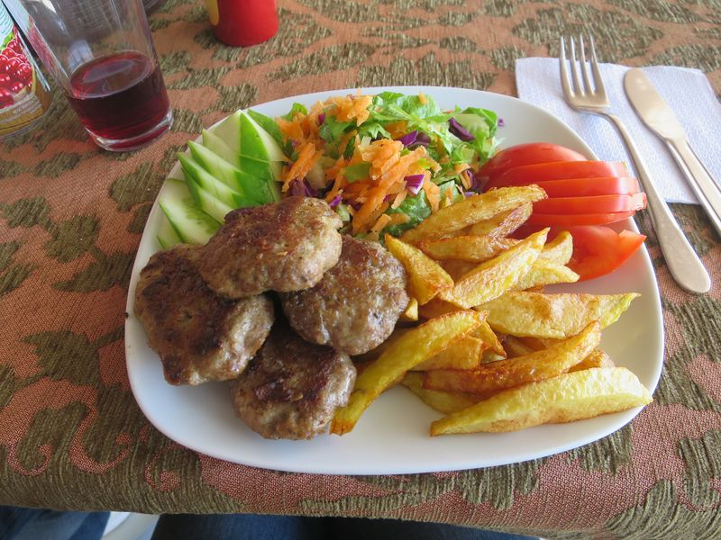Kofta
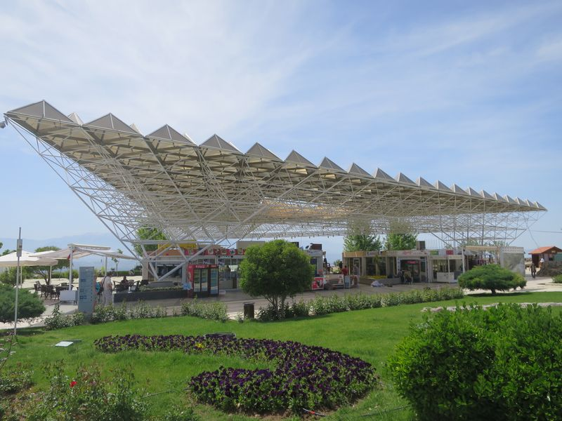
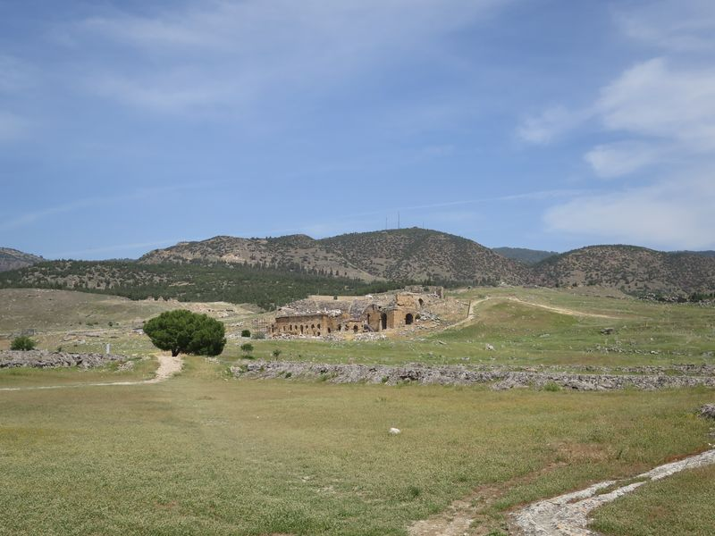
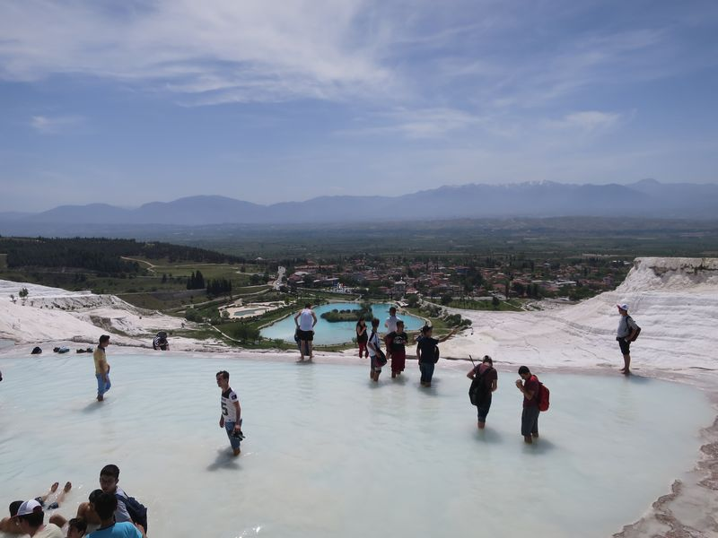
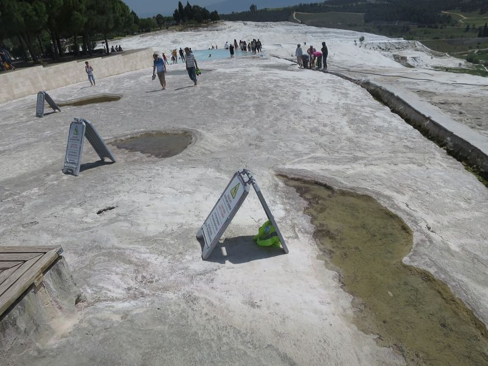乾晒溏…
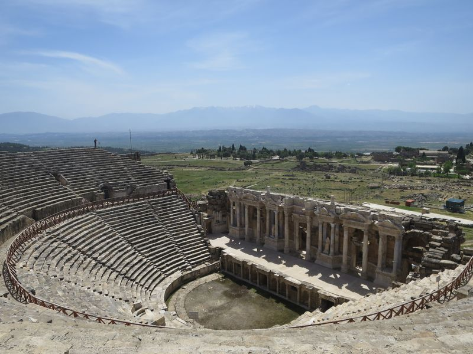
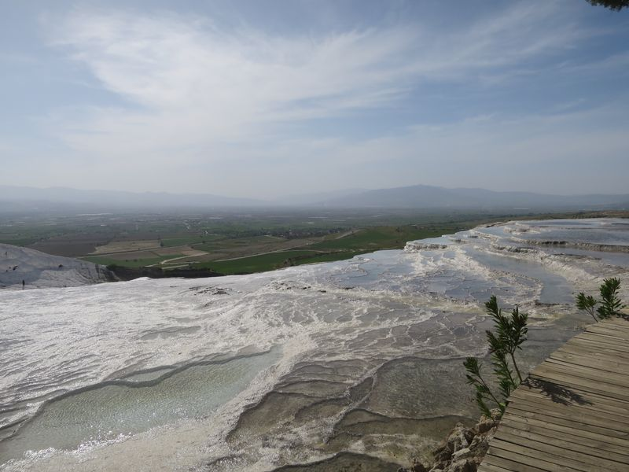
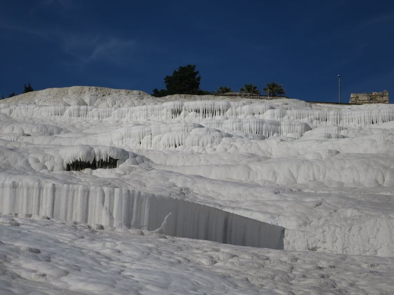
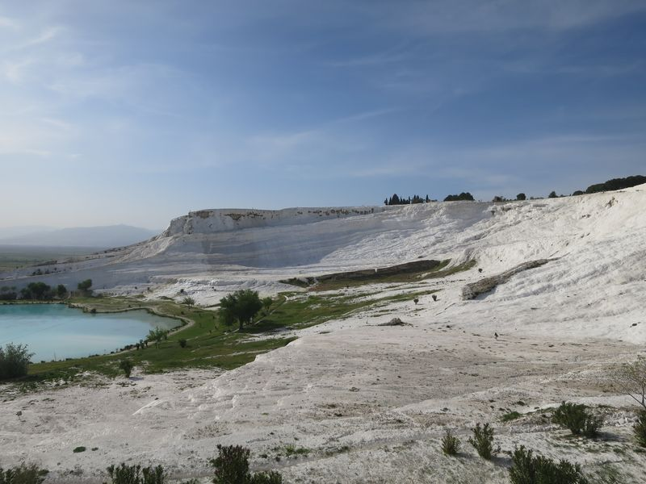
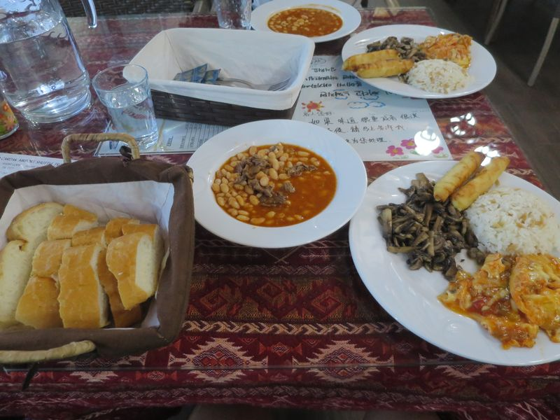
2016 Turkey
❮ Previous
Next ❯